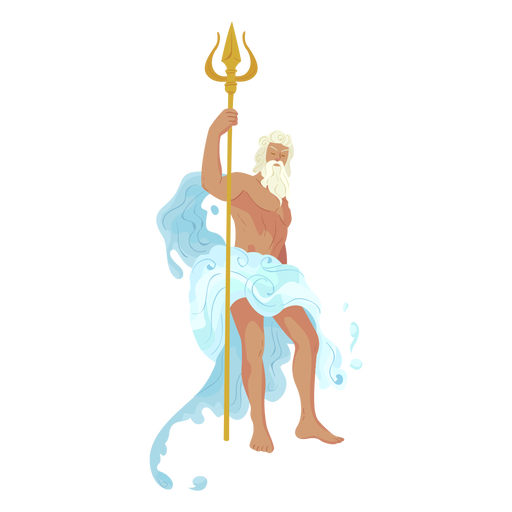

Plast er spesielt en trussel mot livet i havet, som allerede sliter med oppvarming, havforsuring, oppdrett, oljeutvinning og annen forurensning. Hvert år produseres 300 millioner tonn plast, og halvparten brukes kun en gang. Plasten truer livet i havet på to måter; Enten ved at dyrene i havet, for eksempel skilpadder, setter seg fast i plasten, eller ved at dyrene forveksler plasten med mat. Magen fylles dermed opp med plast, og i verste fall kan det føre til at dyrene sulter ihjel. Mikroplast er noe dyr for mye i seg. Dette er små plastpartikler på under 5 millimeter. Mikroplast er et relativt nyoppdaget problem, som nå får stadig mer oppmerksomhet. Mellom en halv million og 1,4 millioner tonn mikroplast forurenser havet årlig.
 Poseidon (gresk: Ποσειδῶν) var i henhold til gresk mytologi en av de olympiske gudene. Han var i antikken referert til som «havets gud» og «jordrysteren», foruten også «temmer av hester». Han ble vanligvis beskrevet og avbildet som en eldre mann med krøllet hår og skjegg. Sjømenn tilba ofte Poseidon om trygg seilas og man ofret ofte hester til havet for hans ære.Han er idag svært misfornøyd med forsøplingen i havet!
Hjelp han å rydde opp ved å finne det skjulte spillet på siden